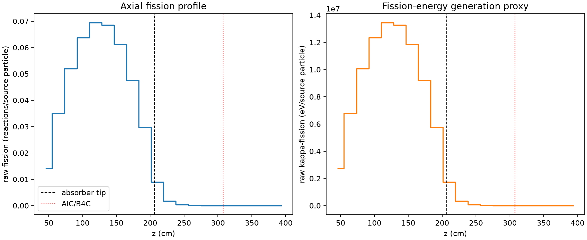
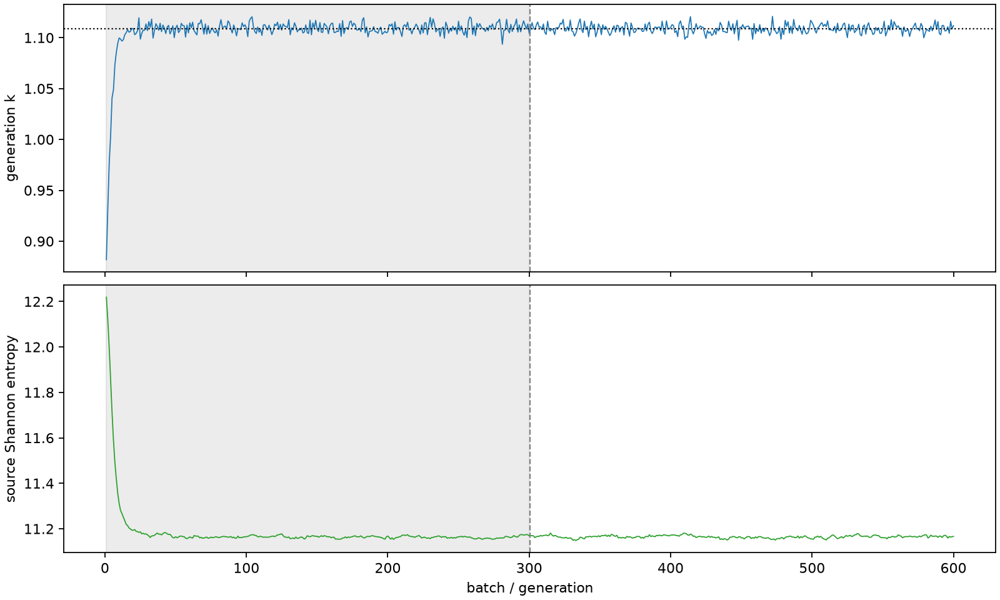

| field | value |
|---|---|
| experiment | V2-ADAPTIVE_01-0032 |
| k | 1.1090244738736887 |
| MC standard error | 0.00016721732672313793 |
| seconds | 1170.1875205180258 |
| acceptance | not_assessed |
| convergence | review_required |
Completed is output integrity only; physical and statistical review required. Zero tallies do not prove zero production or zero uncertainty.
| diagnostic | value |
|---|---|
| geometric fuel voxels | 5280 |
| zero fission tally voxels | 870 |
| low signal fuel voxels | 1851 |
| low signal fission share | 6.862535061387641e-05 |
| low signal kappa share | 6.865668314841181e-05 |
| important fission share | 0.950064116511825 |
| previous filter included | 3429 |
| duration estimate s | 1562.5173488400023 |
| actual minus estimate s | -392.3298283219765 |
| fission relative MC error | statistics |
|---|---|
| all_geometric_fuel | {"voxels": 5280, "positive_mean_voxels": 4410, "zero_mean_voxels": 870, "undefined_relative_error_voxels": 870, "median": 0.01293963250791777, "p95": 0.933504133895515, "maximum": 1.0000000000000002} |
| low_signal | {"voxels": 1851, "positive_mean_voxels": 981, "zero_mean_voxels": 870, "undefined_relative_error_voxels": 870, "median": 0.5926468895834948, "p95": 1.0, "maximum": 1.0000000000000002} |
| important_95pct | {"voxels": 2164, "positive_mean_voxels": 2164, "zero_mean_voxels": 0, "undefined_relative_error_voxels": 0, "median": 0.006803010298500606, "p95": 0.009778791790985248, "maximum": 0.014327564102335391} |
| outside_previous_filter | {"voxels": 1851, "positive_mean_voxels": 981, "zero_mean_voxels": 870, "undefined_relative_error_voxels": 870, "median": 0.5926468895834948, "p95": 1.0, "maximum": 1.0000000000000002} |
| kappa_fission relative MC error | statistics |
|---|---|
| all_geometric_fuel | {"voxels": 5280, "positive_mean_voxels": 4410, "zero_mean_voxels": 870, "undefined_relative_error_voxels": 870, "median": 0.0129235122308493, "p95": 0.9330376816540675, "maximum": 1.0000000000000002} |
| low_signal | {"voxels": 1851, "positive_mean_voxels": 981, "zero_mean_voxels": 870, "undefined_relative_error_voxels": 870, "median": 0.5926326067903084, "p95": 1.0, "maximum": 1.0000000000000002} |
| important_95pct | {"voxels": 2164, "positive_mean_voxels": 2164, "zero_mean_voxels": 0, "undefined_relative_error_voxels": 0, "median": 0.006794304247370308, "p95": 0.009765735318859957, "maximum": 0.014310553942687484} |
| outside_previous_filter | {"voxels": 1851, "positive_mean_voxels": 981, "zero_mean_voxels": 870, "undefined_relative_error_voxels": 870, "median": 0.5926326067903084, "p95": 1.0, "maximum": 1.0000000000000002} |
| axial bin | fission share | kappa-fission share |
|---|---|---|
| 1 | 0.03132584644066685 | 0.03132718740718747 |
| 2 | 0.07748006753955398 | 0.07747951155830461 |
| 3 | 0.11477378510343124 | 0.11477274292956043 |
| 4 | 0.14081508129538653 | 0.1408138091862014 |
| 5 | 0.15333901381087722 | 0.1533378015871762 |
| 6 | 0.15138191919310284 | 0.15138083483436066 |
| 7 | 0.1351991762480794 | 0.1351982110123635 |
| 8 | 0.10504901575438234 | 0.10504803719008915 |
| 9 | 0.06561377137940773 | 0.0656134760309631 |
| 10 | 0.01979181945023938 | 0.019795768749399284 |
| 11 | 0.003984139153533059 | 0.003985717331113895 |
| 12 | 0.0009489041286914637 | 0.0009493036742014547 |
| 13 | 0.00023289328470691738 | 0.00023300167148942183 |
| 14 | 5.2472327688010714e-05 | 5.249592539154631e-05 |
| 15 | 9.404125752030894e-06 | 9.408147254492415e-06 |
| 16 | 2.2907308696504332e-06 | 2.291970436709616e-06 |
| 17 | 3.548959089614856e-07 | 3.5556278463019365e-07 |
| 18 | 4.513772245389716e-08 | 4.523172218798094e-08 |
| 19 | 0.0 | 0.0 |
| 20 | 0.0 | 0.0 |
Histories include the inactive-to-active transition at batch 300. kappa-fission approximates fission energy production, not total heat deposition.

